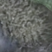

| # | Image | Measurement | Reprojection error | DOM/DSM | Query patch | DOM patch |
|---|---|---|---|---|---|---|
| 0 | 0000.jpg | (3434.0, 3177.0) | 1.060px | row=4840 col=1529 dsm=26.745466232299805 | ||
| 1 | 0000.jpg | (2421.0, 905.0) | 0.247px | row=5922 col=2917 dsm=28.441240310668945 | ||
| 2 | 0000.jpg | (1887.0, 841.0) | 1.157px | row=5792 col=3278 dsm=26.124332427978516 | ||
| 3 | 0000.jpg | (736.0, 1772.0) | 0.523px | row=4805 col=3737 dsm=17.819177627563477 |  | |
| 4 | 0000.jpg | (1511.0, 1089.0) | 0.734px | row=5516 col=3464 dsm=14.419303894042969 |